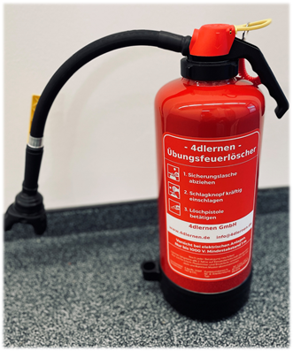
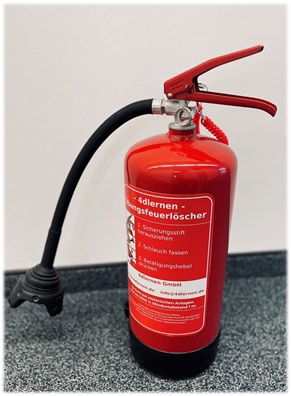
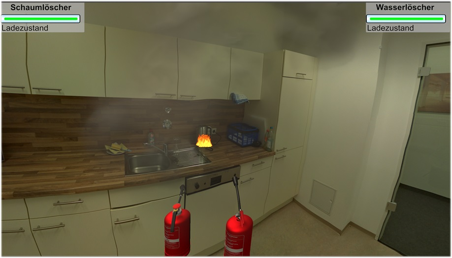
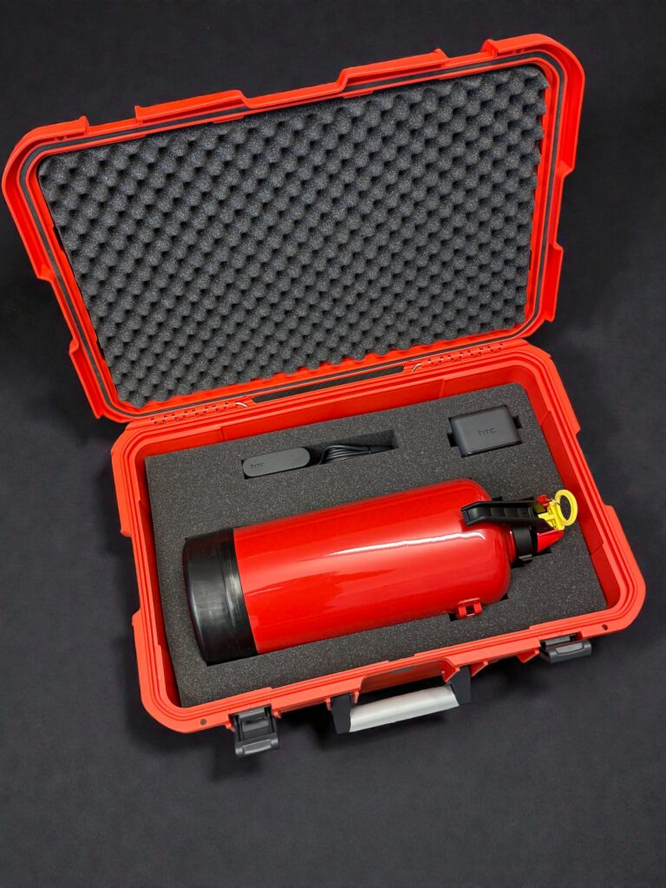
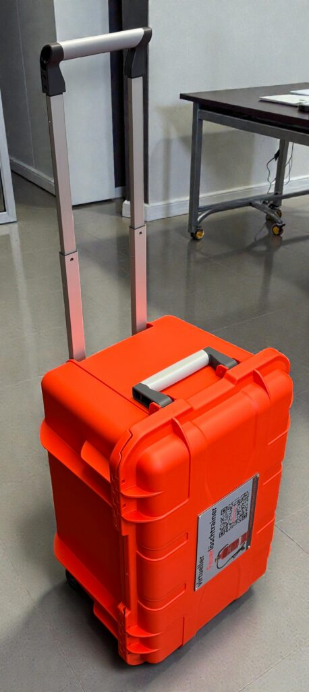

Interesse an einer Anschaffung?
Nutzen Sie die staatlichen Fördermöglichkeiten für die Digitalisierung Ihres Brandschutzes.

Der virtuelle Feuerlöschtrainer der 4dlernen GmbH bietet eine innovative und sichere Möglichkeit, den richtigen Umgang mit Feuerlöschern realistisch zu trainieren – ganz ohne echte Flammen.
Die Feuerlöscher sind 1:1-Abbilder eines echten Modells – in Größe, Gewicht, Sicherung und Auslösemechanik. Das ermöglicht ein realistisches Training. Die virtuelle Umgebung zeigt verschiedene Brandszenarien, etwa Fettbrände oder Elektrobrände. Die Trainer können das Szenario individuell anpassen, beispielsweise die Feuergröße verändern, Rauchentwicklung simulieren oder einen Feueralarm aktivieren.
Für ein professionelles Training bieten wir beide Feuerlöschertypen an: Aufladefeuerlöscher und Dauerdruckfeuerlöscher. Das Beste daran: Beide Modelle können gleichzeitig im Training eingesetzt werden – für ein noch realistischeres, vielseitigeres und praxisnahes Lernerlebnis.


Nutzen Sie die staatlichen Fördermöglichkeiten für die Digitalisierung Ihres Brandschutzes.

Unser System erlaubt das gleichzeitige Arbeiten mit zwei Feuerlöschern. Dadurch kann praxisnah trainiert werden, wie man im Team Brände effektiv und koordiniert bekämpft.
Zudem sind interaktive Einstellungen möglich: Es sind verschiedene Löschmittel wählbar, um unterschiedliche Brandarten korrekt zu bekämpfen. So lernen die Teilnehmenden nicht nur die Handhabung und Technik des Löschens, sondern auch das richtige taktische Vorgehen im Ernstfall.
Zu den SzenarienDas komplette System wird in einem robusten Schutzkoffer untergebracht. Das sieht nicht nur professionell aus, sondern schützt Ihre hochwertige Hardware bei Transport und Lagerung.
Spezialangefertigte Inlays garantieren, dass Laptops, Kabel, Controller und Zubehör wackelfrei und stoßsicher lagern.
Das System kann von nur einer Person mühelos bewegt werden. Dank integrierter Rollen und einem ausziehbaren Griff lässt sich der Koffer rollen wie ein Reise-Trolley.

